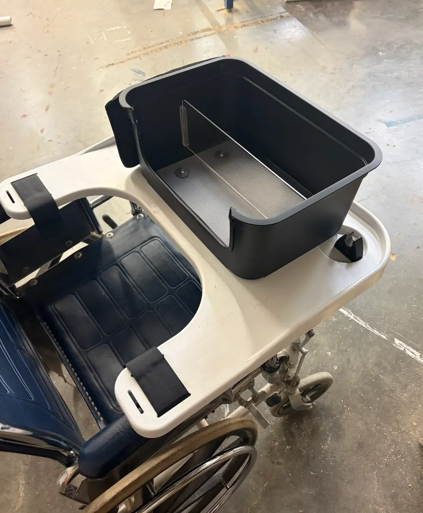

01 Assistive design
Wheelchair Grocery Transport System
A client at Calsted Independent Living needed a safer way to move delivered groceries without losing access to his wheels. Our final system placed the basket in front and stayed usable in forward and backward motion.
I led the initial client call and independently designed, laser cut, and installed the removable acrylic divider.
$147.53total cost
63%below budget
3 mmacrylic divider